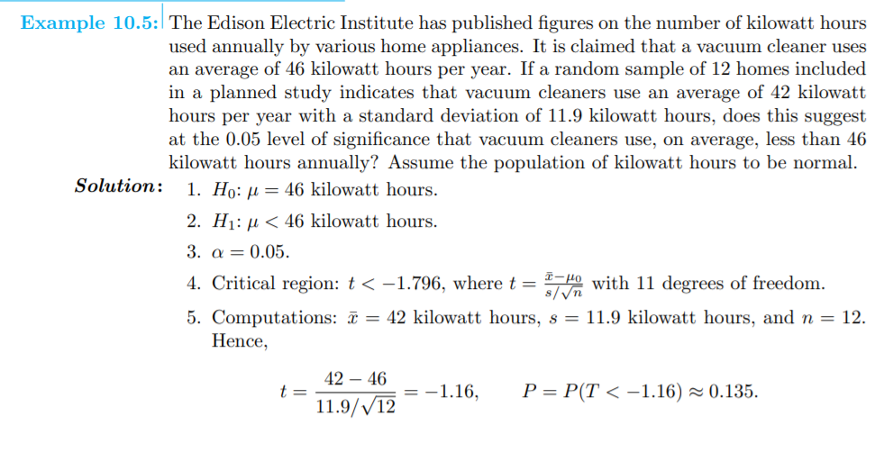

Ima li tko rješenja ZI s materijala? Ili bilo kojih zadataka
 od kud i kako ovaj zadnji korak iscitam za P?
Me
U višestrukoj linearnoj regresiji, kako najbrže mogu izračunati SSE? Jer u zadacima s wallpoleom mi se čini pretjerano puno vremena ako bih izračunao svaki yi^
KiflaKiflic Dat će manje podataka tako da stigneš sve izračunat. Ja sam zadatke planirao računat pomoću excel tablice na kalkulatoru (casio ex), ali ti je sa manje podataka brže sve manualno tipkat.
jel iko riješio ovaj ZI s materijala 2016/2017?
aerius ja sam rijesila prva 4, trebala bi bit ok, ali nisam sigurna sto posto za sve
Ima li netko rjesenje zi 2016/17
mgd objavili ga jučer tek
light_grandma ima na discordu, no ako treba mogu poslati u dm a kasnije i puknuti na materijale